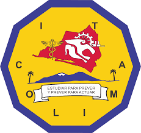

En el vasto mundo de la electrónica, especialmente en el área de potencia, existe una familia de componentes semiconductores que actúan como interruptores electrónicos de alta eficiencia: los tiristores. Estos dispositivos son fundamentales para controlar grandes cantidades de corriente y voltaje, permitiendo desde el regulador de intensidad de una lámpara hasta el control de motores industriales.
A diferencia de los transistores, que pueden amplificar señales, los tiristores están diseñados principalmente para conmutar corriente. Dentro de esta familia, exploraremos al SCR, el DIAC y el TRIAC.
Los tiristores son una familia de dispositivos semiconductores de cuatro capas ($P-N-P-N$) y tres uniones. Se caracterizan por ser biestables, pudiendo estar en estado de bloqueo (apagado) o conducción (encendido). Permanecen en conducción mientras la corriente se mantenga por encima de la corriente de mantenimiento ($I_H$).
Compuesto por cuatro capas ($P-N-P-N$) con tres terminales: Ánodo (A), Cátodo (K) y Compuerta (G).
Fuentes de alimentación controladas, cargadores de baterías y protectores de circuitos (crowbar).
Dispositivo simétrico de tres capas sin terminal de control (compuerta). Tiene dos terminales principales: MT1 y MT2.
Bloquea el flujo en ambas direcciones hasta que el voltaje alcanza el voltaje de ruptura ($V_{BO}$). Al superarlo, el DIAC entra en conducción con resistencia negativa.
Principalmente como disparador para TRIACs en reguladores de luz (dimmers) y controles de velocidad.
Equivalente a dos SCR en antiparalelo con una compuerta común. Posee terminales MT1, MT2 y G.
Puede dispararse con pulsos positivos o negativos, permitiendo controlar la corriente en ambos semiciclos de una señal de corriente alterna (CA).
Control de velocidad en herramientas eléctricas, relés de estado sólido (SSR) y control de temperatura.
Los tiristores constituyen la columna vertebral de la electrónica de potencia. Mientras que el SCR es ideal para rectificación controlada en un solo sentido, el TRIAC ofrece versatilidad en corriente alterna, y el DIAC asegura que los disparos sean precisos y simétricos. Comprender estos componentes permite al estudiante de ingeniería diseñar soluciones eficientes para el control de energía moderna.